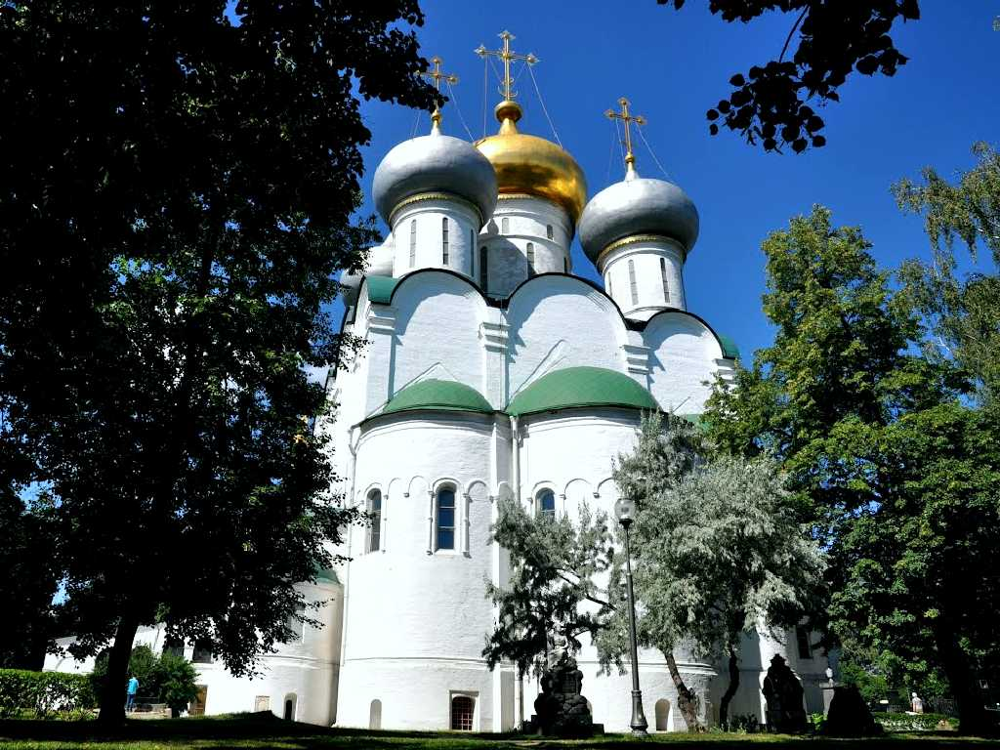
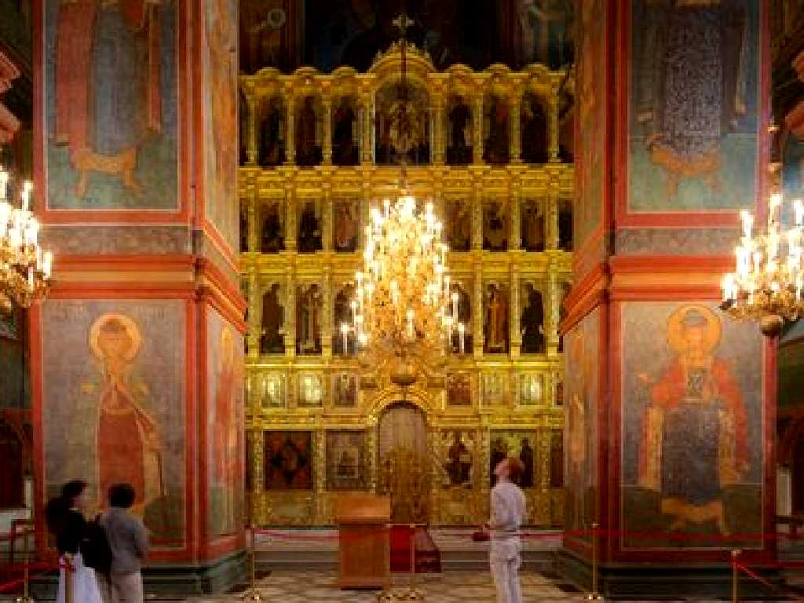
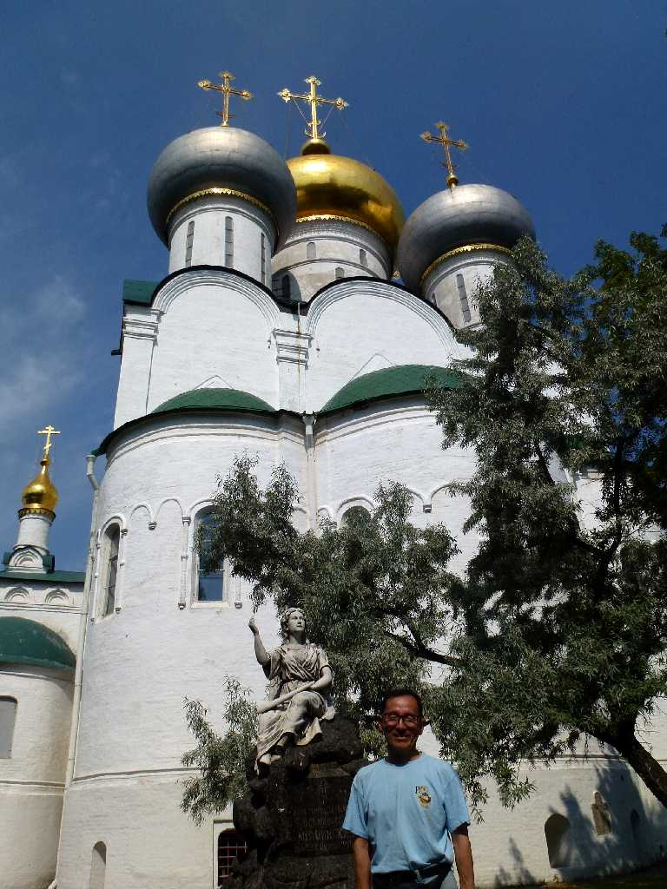
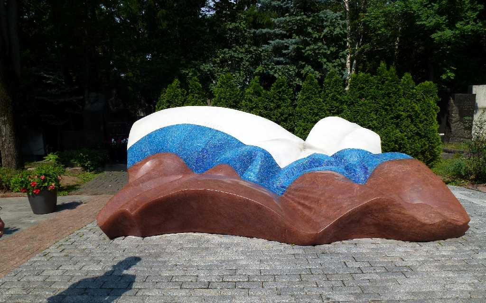
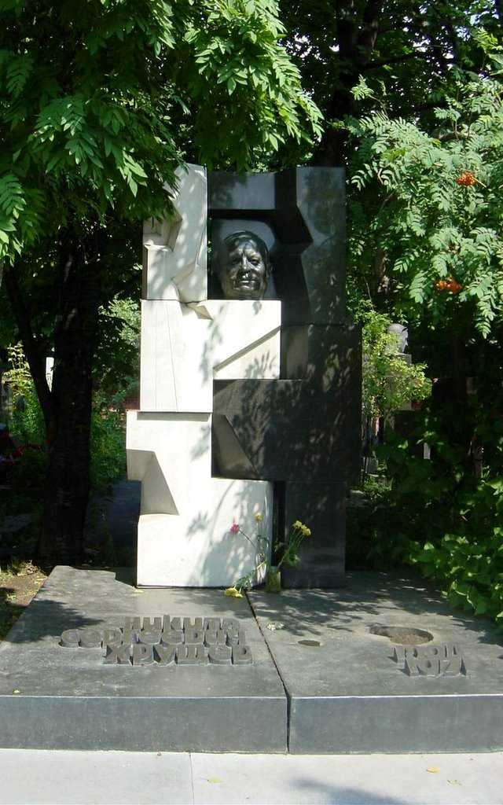
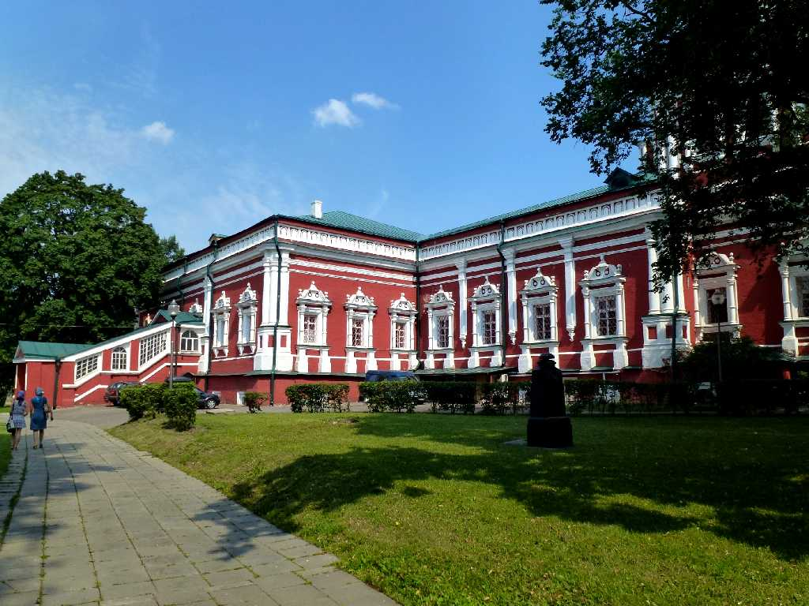
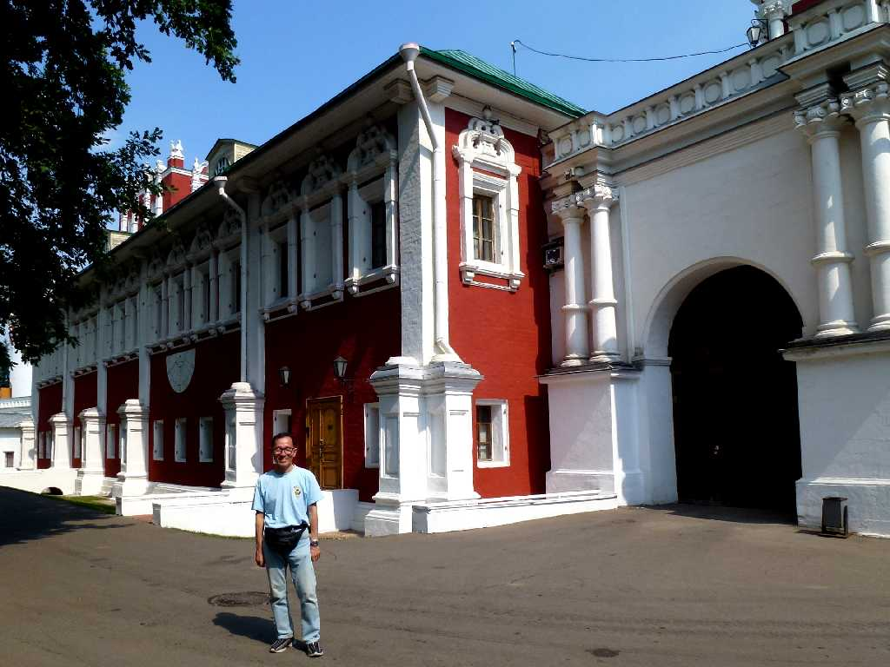
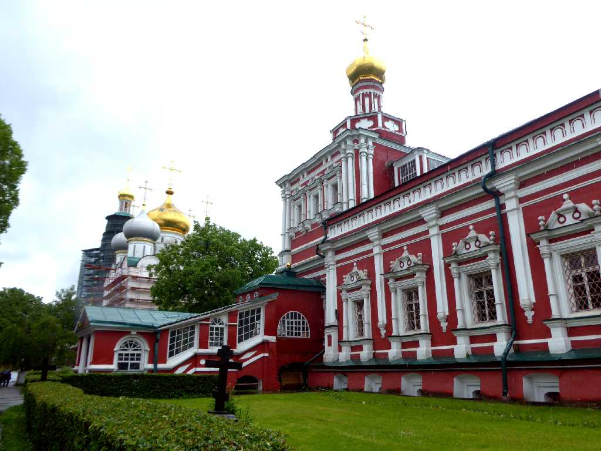
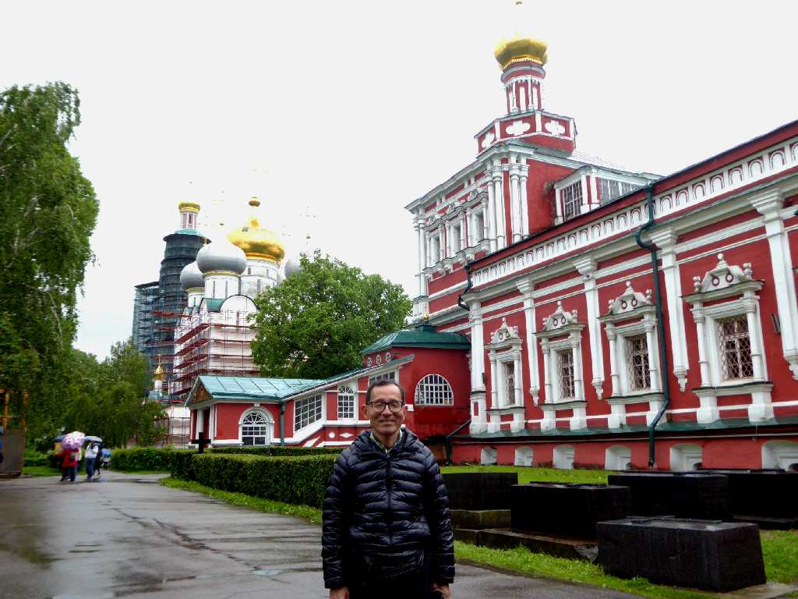

Smolensk Cathedral Novodevichy Convent Moscow
８０日間世界一周鉄道の旅で１２日目 モスクワ大公により１５２５年にノヴォデヴィチ女子修道院の生神女大聖堂が創られた

Altar Smolensk Cathedral
Novodevichy Convent

July 5 2013 Novodevichy Convent

Boris Yeltsin Graveyard Novodevichy Convent
ロシア連邦初代大統領エリツィンのお墓

Khrushchev Graveyard
ソ連邦第一書記フルシチョフのお墓

Novodevichy Convent

July 5 2013 Novodevichy Convent

Novodevichy Convent Moscow
８０日間世界一周鉄道の旅で訪問以来４年ぶりの再訪問

Altar Novodevichy Convent

June 15 2017 Novodevichy Convent